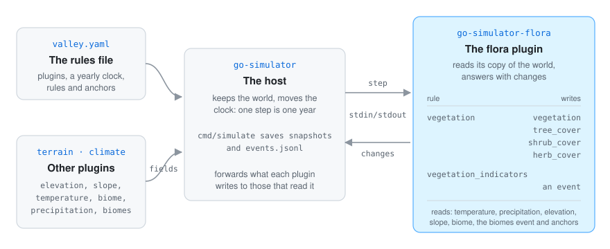

go-simulator is the host. It keeps the world (its fields, events and entities) and moves the clock.
The flora plugin is a separate program the host starts (main.go serves it over standard input and
output, go-simulator’s protocol).
vegetation reads the temperature, precipitation, elevation, slope and biome fields,
the climate’s biomes event and the anchors, and writes the vegetation, tree_cover,
shrub_cover and herb_cover fields (and cover_<id> when asked). Its instance name names the
landscape.vegetation_indicators reads nothing from other plugins: it measures the landscape of the
vegetation rule it names and emits a vegetation_indicators event.A plugin never touches the renderer: it reads its copy of the world and answers with changes (go-simulator’s writing plugins). Fields use physical units and shapes world units, as go-simulator’s vocabulary lists. The plugin reads what the terrain and climate plugins publish from the world instead of loading it again, so they must come before it in the rules file.
The stage’s clock counts years. When the simulation starts, the vegetation rule lays the grid over the
climate’s extent, samples the fields, works out how well every cell suits every species, plants
the anchored plants and publishes the bare landscape. On every step it simulates the years
the step covers, one at a time:
The seeds are spread first, for the whole landscape, with a separable Gaussian kernel (along the
rows, then along the columns). Then every land cell grows, is disturbed and ages, from the state it
had at the start of the year, so the cells are shared out over the processors. The fields are
published again every publish_every years. The model has every formula.
| File | What is in it |
|---|---|
main.go |
starts the plugin |
flora/plugin.go |
the two rules, setting up the landscape, anchors and regions |
flora/landscape.go |
the grid and how the world’s fields are sampled on it |
flora/habitat.go |
habitats, soft edges and distances to anchors |
flora/species.go |
species, settings, managed land, disturbance |
flora/succession.go |
one year: saplings, recruitment, death, room, disturbance, light |
flora/dispersal.go |
the seed kernel and the parallel loop |
flora/publish.go |
the fields, the names and the indicators |
The maps and charts in these pages were drawn from the plugin’s own answers. A small throwaway program, kept outside the repository, ran the real plugin in a go-simulator host and read the fields it published after every year:
examples/valley.yaml with the real terrain and climate plugins, unchanged except for
publish_every: 1 and species_fields: true, so every year could be drawn. Each cell shows the
species of the vegetation field, paler where it covers less, shaded by the relief.They are SVG drawings with their own light and dark colours, not screenshots: the viewer does not draw fields yet. The maps inside them are the cells of the published fields. The diagrams (how it fits, a cell, one year, the light) were drawn by hand in the same style; the cell in the landscape diagram is an example, not a measured one. The pictures of the made-up island in the model were in the docs before these pages; the scenario they come from is not in the repository.